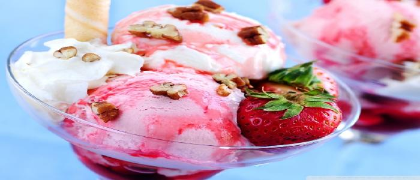

Strawberry Cheesecake
Ingredients:
- 1 package (8 ounces) cream cheese, softened
- 1/3 cup refrigerated French vanilla nondairy creamer
- 1/4 cup sugar
- 1 teaspoon grated lemon peel
- 1 carton (16 ounces) frozen whipped topping, thawed
- 2 packages (10 ounces each) frozen sweetened sliced strawberries, thawed
Directions:
- In a large bowl, beat the cream cheese, creamer, sugar and lemon peel until blended.
- Fold in whipped topping and strawberries.
- Transfer to a freezer container; freeze for 4 hours or until firm.
- Remove from the freezer 10 minutes before serving. Yield: 2 quarts.